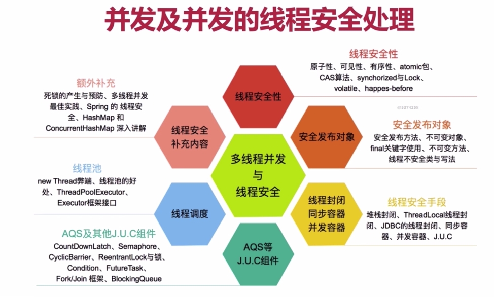
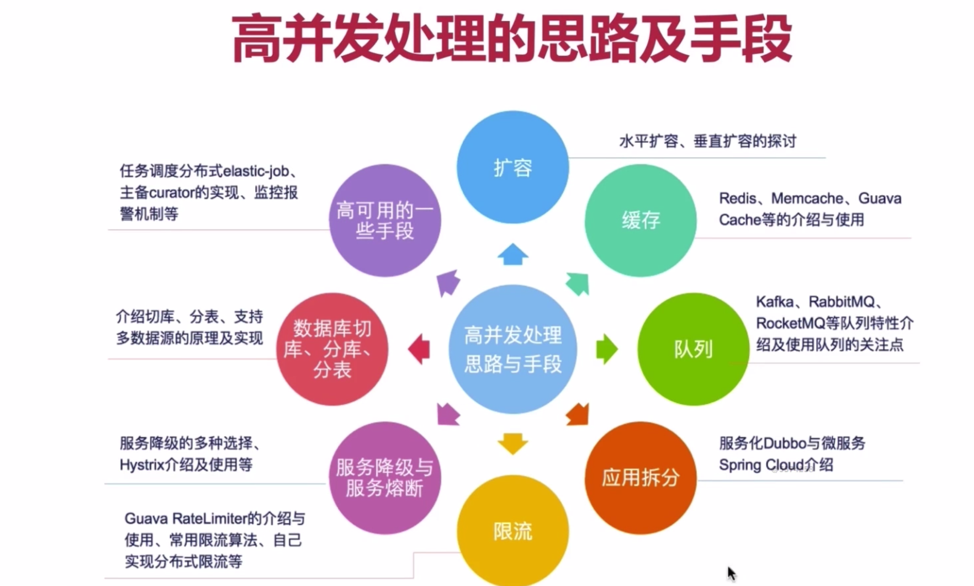
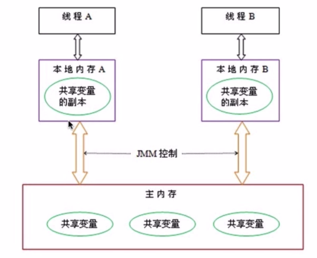
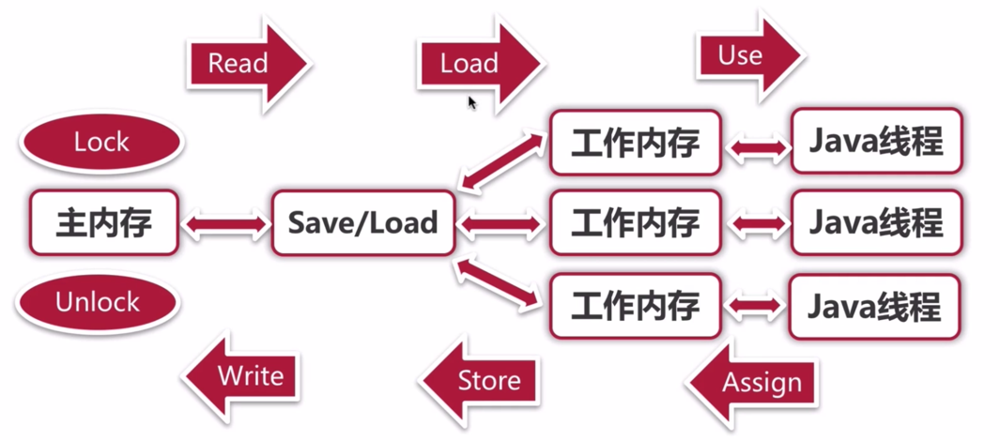

我的主页
Introduction
目录
前端
JS
函数调用
property
new 方法发生了什么
Vue源码解析
1.前期基础准备
2.数据驱动
3.组件
Vue实战
Vue基础
chrome
console中的$
copy & saving
consoleMethod
开发环境
工具
webpack
node
nginx
layout
BFF
koa
框架与库
JAVA
easycoding
spring
sprintboot1
springboot 打包
springboot jdbc
springboot 数据源
springboot 连接池
springjdbc
springdata
项目实战
高并发
权限管理
设计模式
面向对象
工厂模式
抽象工厂
单例模式
适配器模式
装饰器模式
代理模式
策略模式
framework
zookeeper
运维注意点
分布式系统
ds1
应用安全
Web前端
fileupload
团队协作
文档管理
版本管理
中间件]
Linux
Docker
Mysql
LVS
Haproxy
keepalive
redis
实战-mysql集群
实战-redis集群
本书使用 GitBook 发布
高并发
这里是高并发的相关知识
1.高并发
2. 并发与高并发
3. CPU的多级缓存
3.1 为什么需要cpu缓存
4.java的内存模型
4.1 java内存模型的八个操作
这里是高并发的相关知识


1.高并发
通过设计来保证系统具有同时并行处理多个请求的能力
2. 并发与高并发
并发：多个线程同时操作相同的资源，保证线程安全，合理使用资源
高并发：服务同时处理很多请求，提高程序性能
3. CPU的多级缓存
3.1 为什么需要cpu缓存
4.java的内存模型

4.1 java内存模型的八个操作

results matching "
"
No results matching "
"